OTIUM is the practice of deliberate leisure. In the classical sense, otium is not escape from work but time when attention returns to memory, landscape, and thought — without a utilitarian deadline.
We shape routes for lingering, not for checklist tourism. The goal is presence in a place rather than consumption of sights.
OTIUM is not a tour operator. It is an invitation to walk, pause, and leave a route unfinished if the light on a façade deserves another minute.
City symbols
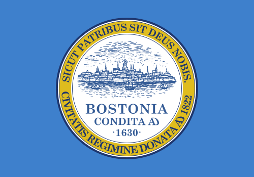
Boston
Guide. Places in this edition: 29.
Boston City Hall
Government Center
Address: 1 City Hall Square, Government Center | Style: Brutalist civic megastructure (Kallmann McKinnell & Knowles) | Period: 1963–1968
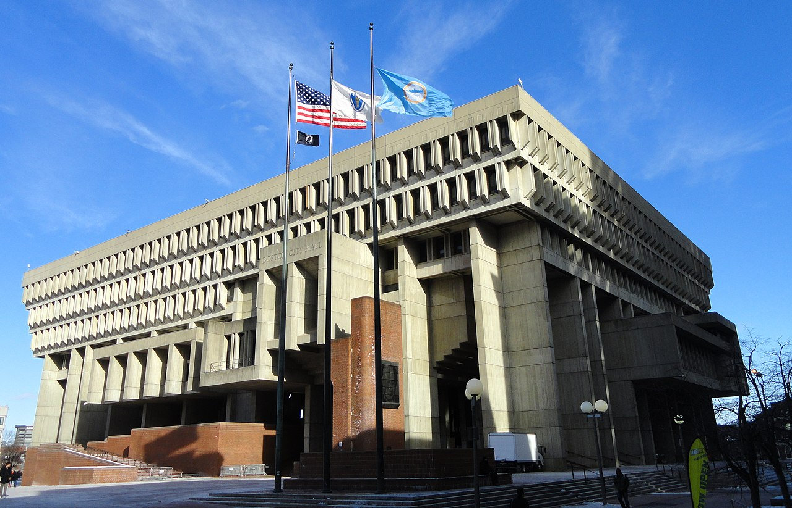
Exposed concrete tiers hover over a brick plaza; love-it-or-hate-it debate defines Boston architecture tours.
Facts and details
Won an international design competition for a new Government Center.
Interior courtyard brings light deep into bureaucratic floors.
History
Replaced Scollay Square clearance with a Modernist ensemble including adjacent federal and state towers.
Significance
Test case for preservation fights over late-20th-century landmarks.
Boston Common
Public park
Address: Bounded by Beacon, Park, Tremont, and Boylston Streets | Style: Historic urban common, Olmsted-adjacent planning influences | Period: Public land from 1634
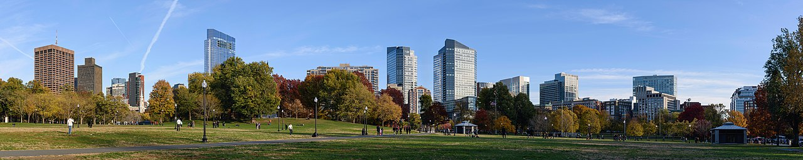
America's oldest city park: Frog Pond, ball fields, and protest ground abut the State House rise.
Facts and details
Once cow pasture and British camp; later abolition and civil-rights rallies.
North end connects to the Public Garden across Charles Street.
History
Puritan town pasture evolved into shared civic turf as Boston densified around it.
Significance
Default open center for both recreation and democratic assembly downtown.
Boston Public Garden
Adjacent to Boston Common
Address: 4 Charles Street (nearby), bound by Arlington and Beacon | Style: Victorian picturesque planting, lagoon and bridge 1867 | Period: 1837 first public botanical garden in U.S.
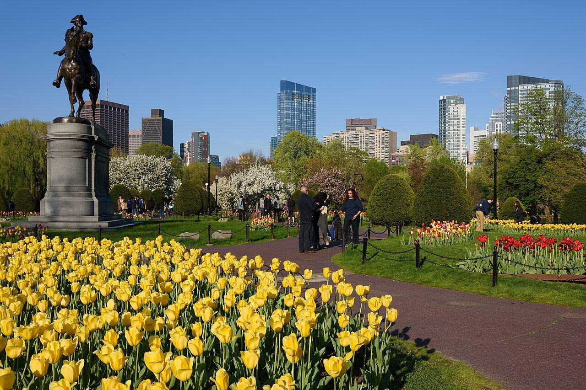
Swan boats trace the lagoon; Make Way for Ducklings statues draw children at the east gate.
Facts and details
George Meacham designed the iron suspension footbridge.
Lagoon receives water from the same system that once flooded the Common's Frog Pond.
History
Aesthetic gardening movement separated ornamental flora from the Common's utilitarian pasture past.
Significance
Refined foil to the Common and Back Bay's central outdoor room.
Boston Public Library, McKim Building
Copley Square
Address: 700 Boylston Street, Copley Square | Style: Renaissance Revival palace of the people (McKim, Mead & White) | Period: 1888–1895 (McKim building)
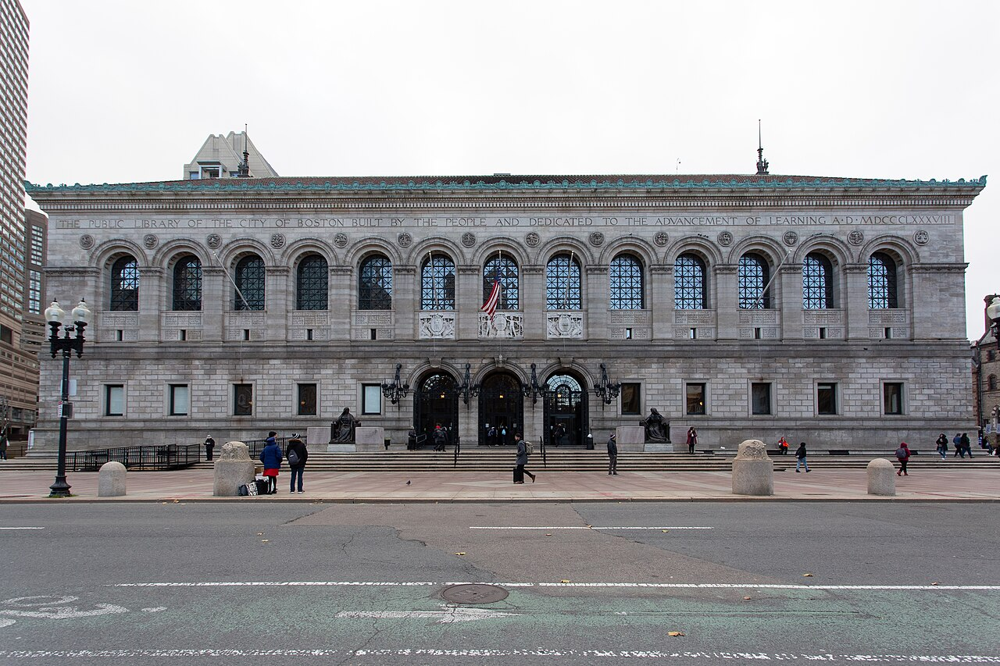
Courtyard, reading rooms, and John Singer Sargent murals reward slow walks; Johnson building adjoins for modern services.
Facts and details
First large free municipal library in the United States to lend books.
Abbey and Puvis de Chavannes cycles ornament major halls.
History
Public philanthropy and progressive-era ideals produced a monumental branch system headquarters.
Significance
Sets the standard for American civic library grandeur.
Boston Tea Party Ships & Museum
Congress Street Bridge
Address: 306 Congress Street, Fort Point Channel | Style: Interpretive waterfront pavilions and tall ships | Period: Museum and replica vessels 21st century on historic wharf line
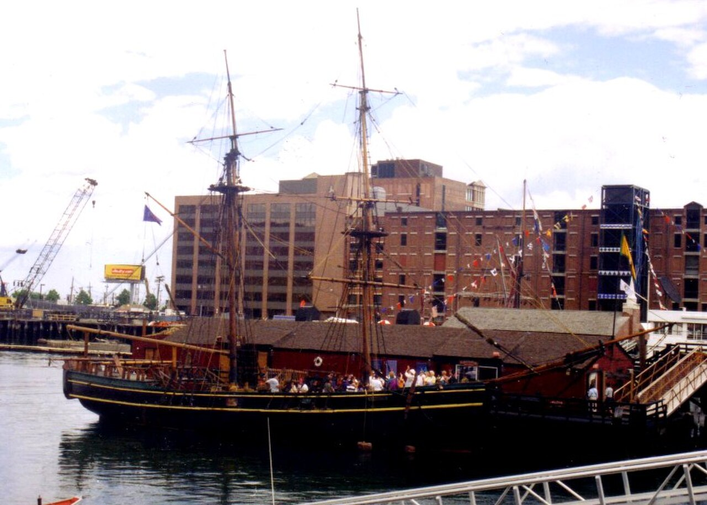
Reenactors, multisensory exhibits, and ship decks narrate the December 1773 protest.
Facts and details
Griffin's Wharf original location was infilled; museum anchors memory nearby.
East India Company tea chests are among displayed artifacts.
History
Boston long balanced heritage tourism with scholarly debate over the Tea Party's meanings.
Significance
Popular Freedom Trail-adjacent immersion in Revolutionary economic protest.
Bunker Hill Monument
Charlestown
Address: 43 Monument Square, Charlestown | Style: Egyptian Revival obelisk on Breed's Hill | Period: 1825–1843 granite obelisk
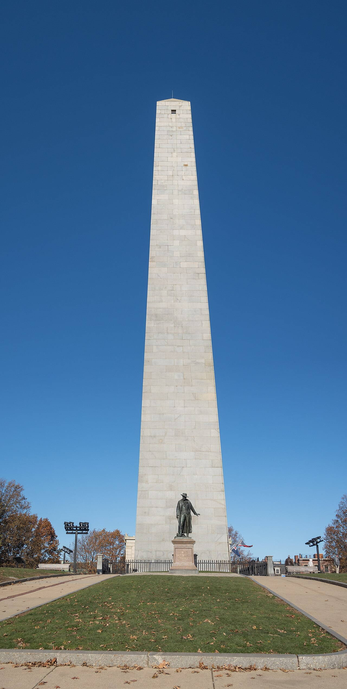
294 steps climb to views commemorating the June 1775 battle; adjacent museum interprets the siege.
Facts and details
Battle was fought mostly on Breed's Hill, not Bunker Hill.
Marquis de Lafayette laid the cornerstone.
History
Women organizers sold craft souvenirs to fund construction in the early republic.
Significance
First major Revolutionary battle monument in the United States.
Charles River Esplanade
Charles River reservation
Address: Charles River reservation, Boston side, Back Bay to bridges | Style: Frederick Law Olmsted lineage river park | Period: Landscaped in earnest 20th century; Hatch Shell 1940
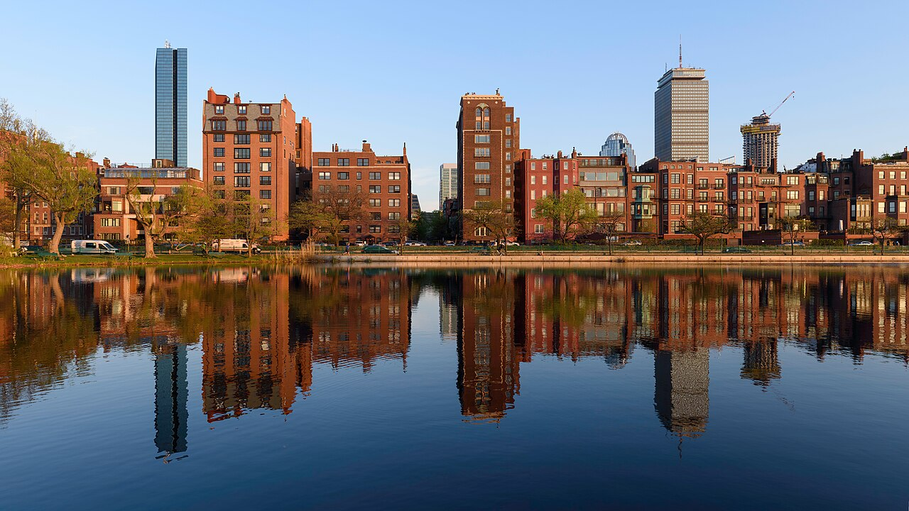
Trails, docks, and the Hatch Memorial Shell host joggers, Pops concerts, and July Fourth crowds.
Facts and details
Arthur Shurcliff extended parkland over former tidal flats and Storrow Drive margins.
Ducks and rowing shells share the narrowed river channel.
History
Metropolitan park movement reclaimed the muddy Charles edge for public leisure.
Significance
Back Bay's front porch and the classic shot across water to Cambridge.
Faneuil Hall
Marketplace and meeting hall
Address: 4 South Market Street, near Dock Square | Style: Georgian market and meeting hall (bell tower) | Period: 1742 hall; rebuilt 1762 after fire
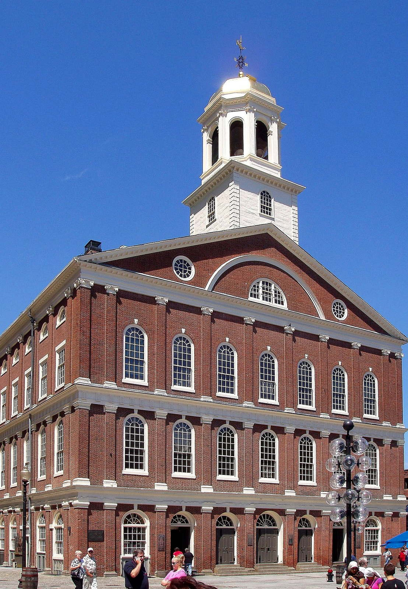
Ground-floor market with an assembly room above; nicknamed the Cradle of Liberty for pre-Revolution debates.
Facts and details
Peter Faneuil donated the building to the town.
Abuts Quincy Market and the larger Faneuil Hall Marketplace complex.
History
Hosted speeches on taxation and representation; survived fires and successive restorations as a rallying site.
Significance
National Register anchor on the Freedom Trail and a living festival marketplace.
Fenway Park
Home of the Red Sox
Address: 4 Jersey Street, Fenway–Kenmore | Style: Early steel-and-concrete ballpark, expanded in stages | Period: 1912
Manual scoreboard, Pesky's Pole, and the Green Monster wall frame the oldest active MLB park in the majors.
Facts and details
Named for the adjacent Fens parkland, not the color of the left-field wall paint.
Survived threats of replacement with landmark status and owner renovations.
History
Janitorial fires and narrow footprint forced clever retrofits; night baseball came early here.
Significance
Cathedral of New England baseball and civic summer ritual.
Fort Independence (Castle Island)
South Boston
Address: 2010 William J. Day Boulevard, South Boston | Style: Pentagonal harbor defense fortification | Period: Current granite fort largely 1801–1833 (Fort Independence)
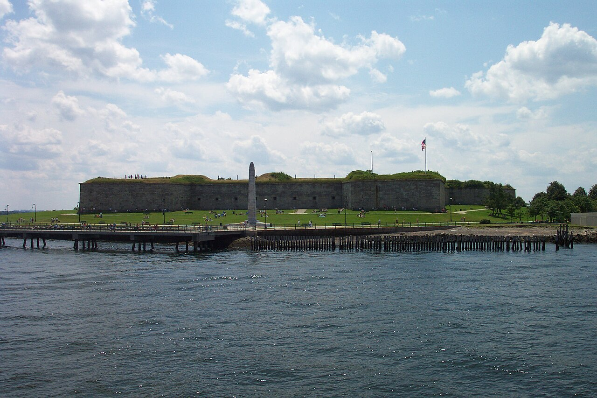
Self-guided tours of casemates; harbor breezes and food trucks on the surrounding island walk.
Facts and details
Edgar Allan Poe served briefly as a soldier at the fort.
Connected to mainland by narrow neck; name Castle Island persists.
History
Successive wood and earth forts guarded the inner harbor from colonial wars through the Civil War era.
Significance
Free public fortress park with broad harbor views toward the airport.
Harvard Yard
Cambridge
Address: Harvard Yard, Cambridge (major gates on Massachusetts and Cambridge sides) | Style: Colonial Harvard brick enclosure, later memorial gates | Period: Yard enclosed 18th c.; Widener and gates evolve continuously
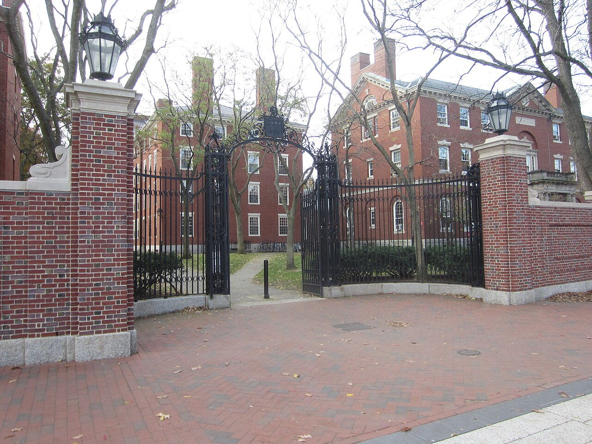
Johnson, Meyer, and Johnston gates puncture brick walls; tourists photograph statues and procession paths.
Facts and details
Freshman dorms ring the Old Yard; upperclass houses spread beyond.
Commencement stages face Memorial Church at the yard's west.
History
Puritan college migrated from Charlestown to Cambridge and walled its commons inward.
Significance
American collegiate archetype of enclosed academic quadrangle.
Isabella Stewart Gardner Museum
Fenway–Kenmore
Address: 25 Evans Way, Fenway–Kenmore | Style: Venetian-inspired courtyard museum (Willard T. Sears after Gardner's program) | Period: 1898–1901 palace; Renzo Piano wing 2012
Courtyard garden, tapestries, and European old masters hang in biographical arrangement per Gardner's will.
Facts and details
1990 theft empty frames remain on walls as memorial.
Evening concerts enliven the Tapestry Room.
History
Boston Brahmin patron built a house-museum stipulating permanent layout.
Significance
Theft site and masterpiece of collector-driven institution building.
John F. Kennedy Presidential Library
Columbia Point
Address: Columbia Point, Dorchester | Style: Modern stark concrete and glass (I. M. Pei) | Period: 1977–1979
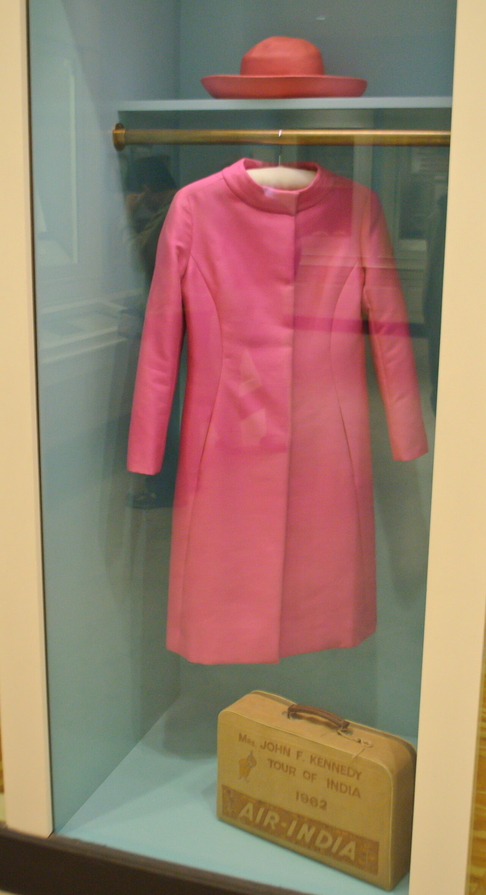
Pavilion, archives, and exhibits recall the New Frontier on a peninsula jutting into Dorchester Bay.
Facts and details
Includes Oval Office recreation and campaign multimedia.
Adjacent to UMass Boston campus.
History
Site chosen after Harvard negotiations failed; federal archives meet family foundation stewardship.
Significance
Major presidential library for the nation's first Catholic president.
Longfellow Bridge
Charles River
Address: Charles River between Boston and Cambridge | Style: Steel arches with granite salt-and-pepper towers | Period: 1900–1907; major rehabilitation 2008–2018
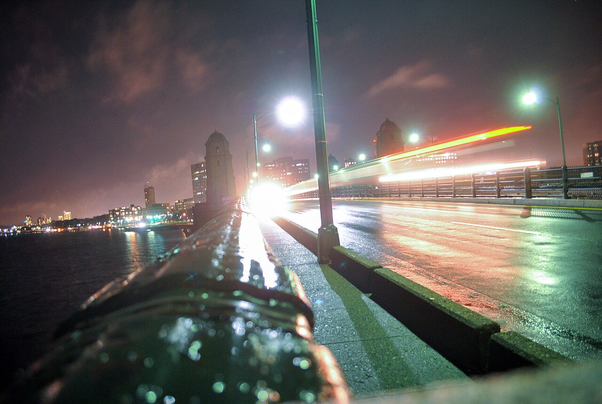
Red Line trains share the central truss with cyclists and pedestrians on outboard walks.
Facts and details
Nicknamed Salt-and-Pepper Shakers for paired monument shapes.
Named for poet Henry Wadsworth Longfellow, a Cambridge resident.
History
Replaced earlier span as streetcar and subway demand boomed before the Great War.
Significance
Primary multimodal link aligning MIT and Beacon Hill sightlines.
MIT Great Dome
Cambridge
Address: 77 Massachusetts Avenue, Cambridge (Building 10) | Style: Neoclassical massing over modern labs (William Welles Bosworth) | Period: 1938–1939
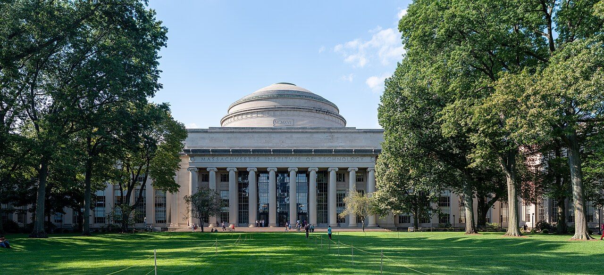
The limestone dome caps the Infinite Corridor axis; hack decorations on its roof are campus legend.
Facts and details
Modeled in spirit on McKim's Columbia Low Library dome.
Lobby 10 opens toward Killian Court and the Charles.
History
Built as MIT moved from Boston to Cambridge; symbol of engineering institute gaining civic monumentality.
Significance
Instant shorthand for MIT in aerials and commencement photography.
Tilting towers, stainless wrinkles, and chalkboard-filled corridors house CSAIL and related departments.
Facts and details
Leaks and cracking prompted litigation and repairs early on.
Informally mapped as the building designed by folding a gum wrapper.
History
MIT's drive to cluster computer science spurred a signature contemporary campus statement.
Significance
Most photographed piece of late-20th-century Cambridge architecture.
Massachusetts State House
Beacon Hill
Address: 24 Beacon Street, Beacon Hill, Boston | Style: Federal-style capitol with Charles Bulfinch dome (gold sheathed) | Period: 1795–1798 (bulfinch core); major additions later
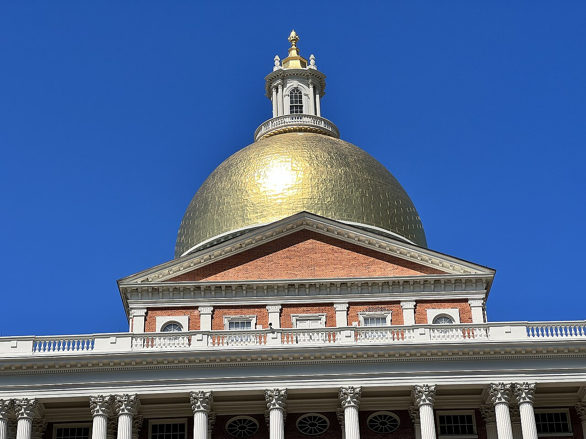
Seat of the Massachusetts General Court; the dome is an orienting landmark above Boston Common.
Facts and details
Freedom Trail passes the front lawn on Beacon Street.
Bulfinch's design established the classical civic look copied by other state capitols.
History
Built on John Hancock's pasture as a purpose-built capitol for the Commonwealth; expanded through the 19th and 20th centuries.
Significance
Working government center and symbol of Massachusetts civic life since the early republic.
Museum of Fine Arts, Boston
Huntington Avenue
Address: 465 Huntington Avenue | Style: Beaux-Arts core with I. M. Pei West Wing and contemporary glass entries | Period: 1909 Copley plaza import; multiple 20th–21st c. wings
Ancient Americas, Impressionism, and John Singer Sargent rooms anchor a sprawling encyclopedic museum.
Facts and details
One of the most visited art museums in North America.
Partners with neighboring schools and the Gardner up the avenue.
History
Founded 1870; moved along the Arts corridor as collections outgrew Copley Square.
Significance
Flagship fine-art institution between Boston University and the Longwood medical area.
Waterfront renewal project paired tourism with research and rescue programs.
Significance
Harbor-walk anchor between the Financial District and the North End.
Newbury Street
Back Bay
Address: Newbury Street, Back Bay, Arlington to Massachusetts Ave. | Style: Brick and brownstone mixed-use Back Bay streetwall | Period: Victorian row house fabric, 19th c.; retail intensified 20th c.
Eight blocks of galleries, fashion, cafés, and rooftop decks draw walkers between the Public Garden and the Charles gate.
Facts and details
Built on filled tidal flat along a engineered grid.
Sidewalk patios peak in warm months.
History
Residential blocks converted gradually to high-rent retail and dining.
Significance
Boston's default upscale strolling and window-shopping spine.
Old North Church
Christ Church, North End
Address: 193 Salem Street, North End | Style: Georgian Anglican church, Christopher Price | Period: 1723
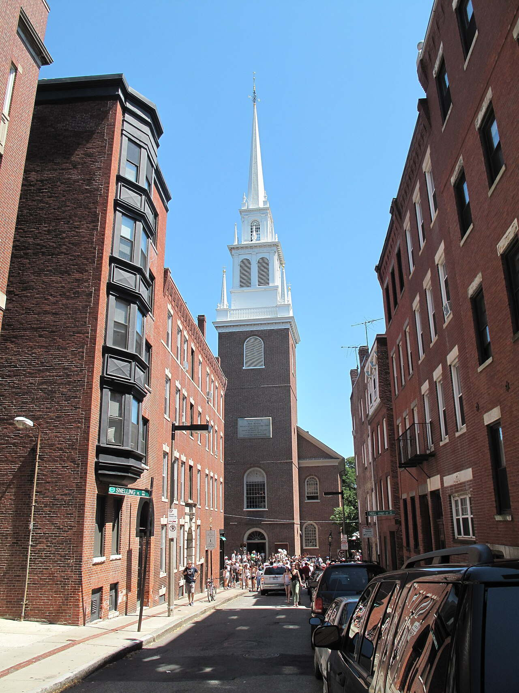
Boston's oldest standing church building; twin practice bell towers recall the lantern signals of 1775.
Facts and details
Official name: Christ Church in the City of Boston.
Paul Revere's ride legend ties two lanterns to British troop movements.
History
Seating boxes rented to families; Anglican in a dissenting town; still an active Episcopal parish.
Significance
Freedom Trail icon linking religious architecture to Revolutionary memory.
Paul Revere House
North Square
Address: 19 North Square, North End | Style: Post-Medieval timber frame urban house | Period: c. 1680
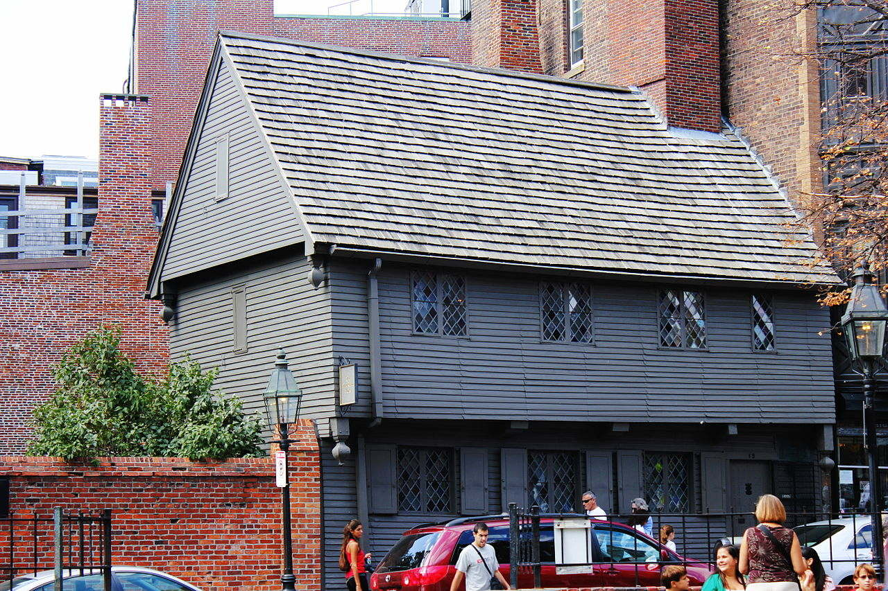
The patriot's family home is a small museum of 17th–18th century domestic life and silversmithing tools.
Facts and details
Boston's oldest surviving structure downtown in continuous habitation.
Purchased by Revere in 1770; later saved from demolition as relic.
History
Saved and interpreted by groups honoring Revolutionary memory as the North End densified with immigrants.
Significance
Tangible scale of everyday life behind the midnight-ride legend.
Prudential Tower
Back Bay
Address: 800 Boylston Street, Back Bay | Style: International Style office tower (The Luckman Partnership) | Period: 1965 tower core; observatory rebranded Skywalk
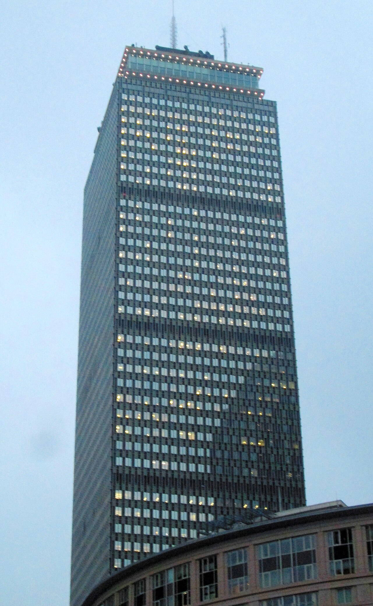
Shopping galleria, offices, and a high view deck cap the Hynes corridor terminus.
Facts and details
Named for Prudential Insurance's regional headquarters anchor.
Observation level competes with newer Back Bay rooftop venues.
History
Postwar clearance inserted a superblock over former yards near the terminal.
Significance
Visual exclamation point on the Back Bay skyline since the 1960s.
Quincy Market
Faneuil Hall Marketplace
Address: 206 South Market Street | Style: Greek Revival long market hall, Alexander Parris | Period: 1824–1826
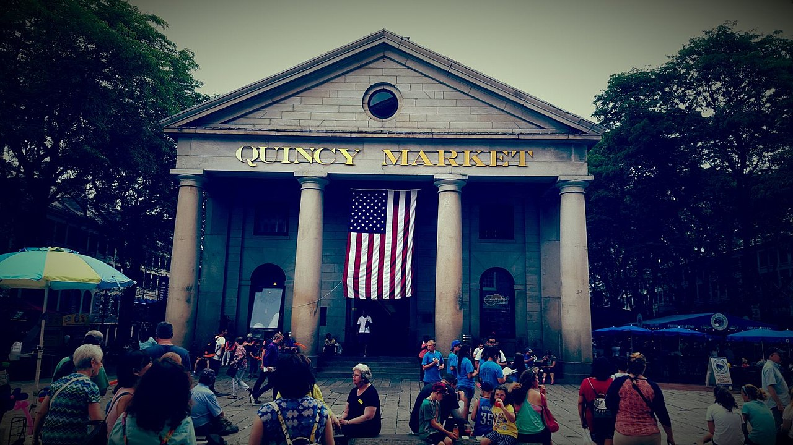
Neoclassical colonnade wraps food stalls, street performers, and seasonal crowds between Faneuil Hall and the waterfront.
Facts and details
Named for Mayor Josiah Quincy, who championed expanding harbor markets.
Interior barrel vaults carry granite from quarries near the city.
History
Revitalized in the 1970s as festival retail when downtown preservation met tourism.
Significance
Defines the scale and rhythm of modern Faneuil Hall Marketplace.
Revere Beach
Revere
Address: Ocean Avenue, Revere, MA (MBTA Blue Line Revere Beach) | Style: American resort boardwalk vernacular | Period: Public reservation 1896; pavilion structures 20th c.
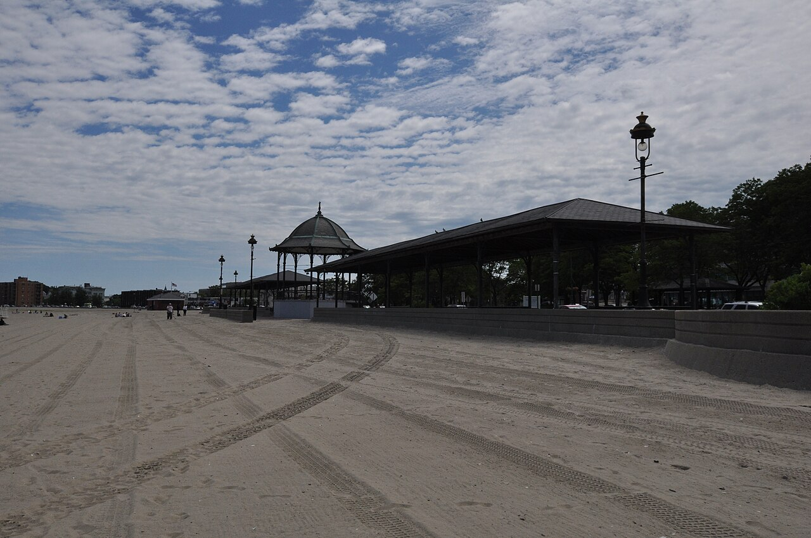
America's first public beach predates modern zoning; low dunes, arcades, and summer crowds face Massachusetts Bay.
Facts and details
Electric railway from day one made it a working-class escape.
Carousel trade names survive in song and memory though rides changed over time.
History
Moral reformers and civil engineers cooperated to clear shanties and formalize bathing.
Significance
North Shore counterweight to Cape traffic for Greater Boston beach days.
The First Church of Christ, Scientist
Christian Science Plaza
Address: Christian Science Center, Huntington and Massachusetts Avenues | Style: Modernist plaza, tower, and chamber by I. M. Pei & Partners et al. | Period: 1968–1975 complex phases
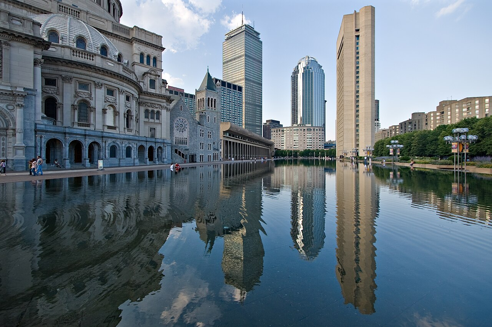
Reflecting pool, colonnaded mother church extension, and sleek publishing house frame a contemplative superblock.
Facts and details
Mapparium glass globe theater sits in the publishing building nearby.
Reflecting pool sized for skating in winter.
History
Church expanded headquarters as Christian Science publishing peaked mid-century.
Significance
Largest modernist ensemble in Boston outside Government Center.
Trinity Church
Richardson, Copley Square
Address: 206 Clarendon Street, Copley Square | Style: Richardsonian Romanesque heavy stone masses | Period: 1872–1877 (current building)
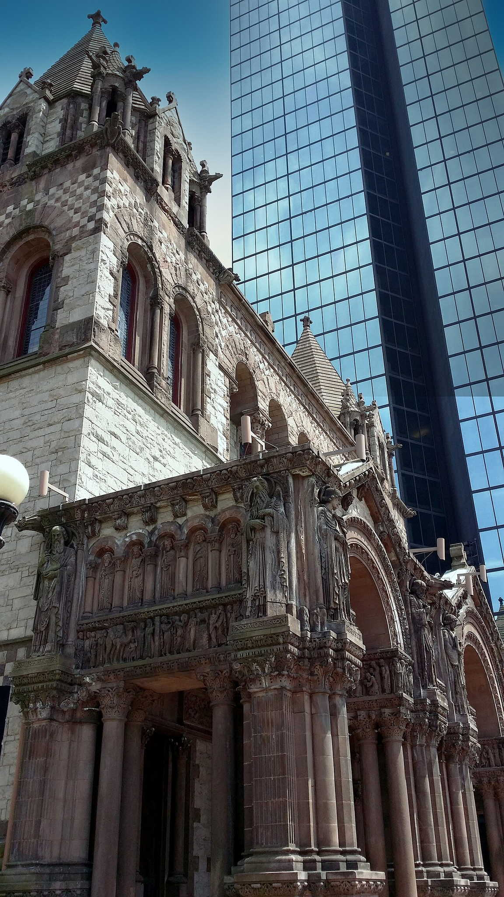
H. H. Richardson's seminal church gathers around a central tower; stained glass and carved interior are integral to the design.
Facts and details
Reflecting pool of the contemporaneous Public Library mirrors its west front.
Congregation moved here after the Great Boston Fire destroyed its prior site.
History
Engineering-grade foundations on filled land solved Copley's swampy soils under the weight of stone.
Significance
National Historic Landmark that launched a national Romanesque revival.